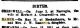

EAMER, Lucy Addis
-
Name EAMER, Lucy Addis Born 31 May 1915 Meekatharra, Western Australia, Australia 

Lucy Addis Eamer
Birth Notice: West Australian, Jun 1915Gender Female Unique Id 95BE177A1D064004A678E59DD559FAABBE0D Died 8 Apr 2000 Bassendean, Western Australia, Australia Buried Karrakatta, Western Australia, Australia - Memorialised Lance Howard Memorial Gardens, Rose Memorial, Site BL, Position 0020.

Gravesites/HunterEB1915+EamerLA1915.JPG
Mr&Mrs Hunter R.I.P.
Plot: Section BL 0020Person ID I569 Tree One Last Modified 3 Nov 2008
Father EAMER, John William, b. 1 May 1879, Mount Remarkable, South Australia, Australia , d. 11 Jun 1955, Perth, Western Australia, Australia (Age 76 years) Mother WILLOWS, Lucy, b. 14 Aug 1882, Bendigo, Victoria, Australia , d. 18 Aug 1958, Nedlands, Western Australia, Australia (Age 76 years) Married 31 Jul 1905 Nannine, Western Australia, Australia 
Nannine, Western Australia
Wedding: Nannine, Western Australia - 31st July 1905Family ID F130 Group Sheet | Family Chart
Family 1 BEER, William, b. 11 Sep 1905, d. May 1983 (Age 77 years) Married 31 Aug 1940 
Beer Wedding
Taken Perth 1941, at the wedding of William Beer and Lucy Addis EamerChildren + 1. BEER, Helen Margaret, b. 20 Dec 1941 (Age 84 years) + 2. BEER, Lorraine Lucy, b. 16 Sep 1945 (Age 80 years) Last Modified 12 Jul 2009 Family ID F146 Group Sheet | Family Chart
Family 2 HUNTER, Edwin Borne, b. 08 Sep 1915, d. 22 Mar 2006, Bentley, Western Australia, Australia (Age 90 years) Married 1969 
Second time lucky
Wedding day 1969Last Modified 24 Oct 2008 Family ID F147 Group Sheet | Family Chart
-
Event Map Born - 31 May 1915 - Meekatharra, Western Australia, Australia 
Died - 8 Apr 2000 - Bassendean, Western Australia, Australia Buried - - Karrakatta, Western Australia, Australia = Link to Google Earth Pin Legend  : Address
: Address
 : Location
: Location
 : City/Town
: City/Town
 : County/Shire
: County/Shire
 : State/Province
: State/Province
 : Country
: Country
 : Not Set
: Not Set
-
Photos 
Lucy
Taken c.1920
Lucy
Taken c.1921
Jack and I
Brother and Sister, c.1922
Eamer Sister, Dorothy and Lucy Addis Eamer
Wedding of William McBean and Dorothy Eamer
Me and Bill
Taken c.1955
Arnt i smart!
Taken on 20/12/1942, first birthday of Helen Beer being nursed by Grandma as mother stands behind
Me and the kids
Lucy Addis Eamer with her daughters, Lorraine and Helen Beer
Last minute shopping
Taken in Perth the day prior to the wedding of Lucy Addis Eamer to William Beer, 1941.
Lucy
Taken in Forrest Place, Perth, WA - c.1950
On the town!
Taken in Forrest Place, Perth c.1950
The 'Eamer Girls'
L-R: Jean Eamer (Donohoe) holding John Geoffrey Eamer, Dorothy Eamer, Lucy Addis Eamer and Lucy Eamer (Willows) seated.
Front Row - 2nd from right
Taken on 16th Sept, 1966 at Lorraine Lucy Beer's 21st Birthday party.
Me n my Ted.
Wedding day, 1969
Eamer siblings
Jack Eamer's 60th Birthday. Taken in backyard of 12 Helena Street, Midland
Lucy Addis Eamer
March 1997